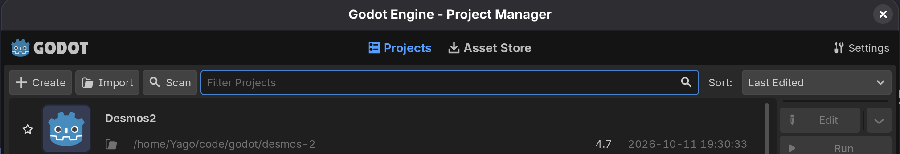
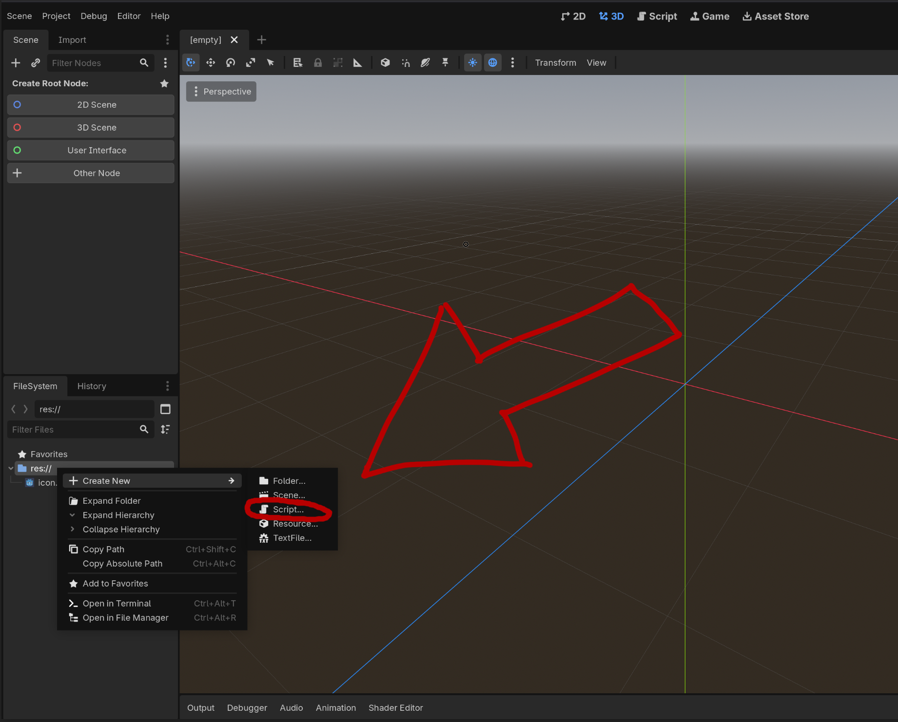
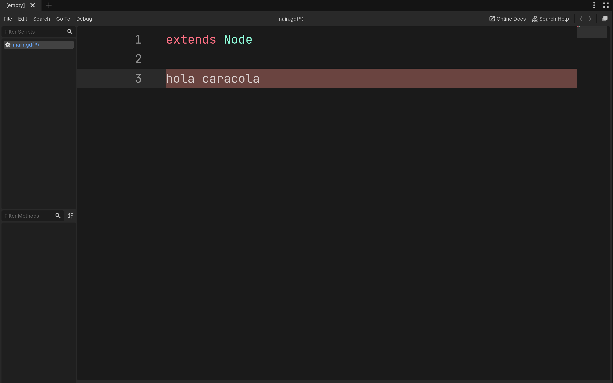
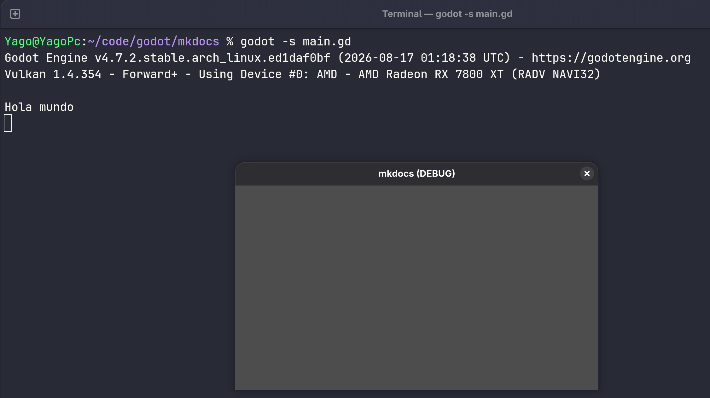

Empecemos
Antes de comenzar la introducción más teorica, vamos a asegurarnos que todos tenemos godot funcionando y sabemos ejecutar código.
Instalación de Godot
- Para windows: https://godotengine.org/download/windows/
- Para linux: https://godotengine.org/download/linux/
Nuestro primer programa
Debido a que no vamos a hacer juegos todavía, vamos a ejecutar código de Godot directamente en la terminal sin ejecutar una escena de juego tal cual. Digamos que primero vamos a aprender a hacer scripts, no juegos.
Esto va a quedar más claro en la práctica.
1. Creamos un nuevo proyecto de godot:
Create -> escribimos el nombre -> Create
Elegir carpeta donde queremos crear el proyecto.

2. Creamos un nuevo script. (Ignoramos el resto del editor de godot por el momento)

3. Llamar al script como queramos, preferiblemente main.gd.
Los más aventajados de la clase podeis haber supuesto que gd viene de GDScript, y estaríais en lo cierto. Una galletita para vosotros -> 🍪.
No os preocupeis, es sin lactosa y sin gluten :).
4. Editor de texto:

Esta ventana que tenemos en el centro del editor de Godot es nuestro editor de texto, donde vamos a programar. Este editor funciona como otro cualqueira, de igual forma podriamos usar el bloc de notas, visual studio code o cualquier otro IDE.
Vamos a usar este editor de texto pues tiene sus ventajas para Godot y GDScript.
Recomendación de aumentar el tamaño del texto para que se vea bien: ctrl + rueda de ratón o con el + y el -.
5. Escribimos el código
No me gusta la práctica de copiar y pegar código sin entender que hace, pero para comprobar que todo funcione antes de empezar nada, permitidme una pequeña excepción.
Copiad y pegad en el editor el siguiente código:
Ignoremos las dos primeras lineas por el momento, pero fíjate en print("Hola mundo")
Qué crees que puede significar esta linea? qué efecto tendrá?
6. Ejecución de código
Este código que hemos escrito no es apto para ser ejecutado directamente por godot como si fuera una escena de un juego. Pero sí puede ser ejecutado por una terminal usando Godot a modo de interprete de este script.
En resumen, este código solo puede ser ejecutado en terminal. Para ello necesitamos abrir una terminal en la carpeta donde se encuentra nuestro script (el main.gd), el cual está en la carpeta donde hayamos creado el proyecto.
Abrir una terminal
Si necesitas ayuda para saber cómo abrir una terminal.
-
En Windows es tan fácil como abrir la carpeta, hacer
Shift+click derechoen el area de la carpeta y deberias ver un botón que dice algo como "Abrir ventana de PowerShell aquí" o "Abrir terminal aquí" -
En Linux ya depende, pero se suele poder haciendo click derecho en el area de la carpeta y debería aparecer la opción.
Ahora que tenemos una terminal abierta en la carpeta donde tenemos el script, para ejecutarlo escribimos el siguiente comando:
godot -s <nombre del script>
-
Siendo:
godot- Indica que comando queremos ejecutar. Normalmente el comando godot (sin nada más) abrirá el programa Godot.-s- Esto le indica al comando que queremos ejecutar un Script (s de script).<nombre del script>- Serámain.gden nuestro caso.
7. Disfrutar
Has ejecutado el script? Deberías ver que en la terminal se ha escrito "Hola mundo".

Si es así, FELICIDADES! Toma una galletita -> 🍪
Antes de continuar, quizá has notado que se abre una ventana de programa (donde no se ve nada porque no hemos programado nada que deba verse). Y que el programa no acaba. No hemos recuperado el control de la terminal y no podemos escribir más comandos.
Para recuperar el control de la terminal escribe ctrl + c.
8. Mejorar ejecución
Hay aluna manera de que no se abra una molesta ventana y que el programa finalice él solito? Que buena pregunta! así me gusta. Pues sí que la hay. Vamos a modificar un poco el comando que usamos para ejecutar scripts:
godot -s <nombre del script> --headless --quit
-
Siendo:
--headless- Para poder ejecutar el programa sin que se abra una ventana de godot.--quit- Para que el programa se cierre tras su ejecución.
Nota
Para más información, consultar la documentación de Godot. docs.godotengine.org/en/stable/
O probar el comando godot --help en una terminal.
Prueba de nuevo el script que hemos programado usando este nuevo comando. Verás que es mucho más comodo.
Importante
Acuérdate o apúntate el comando, pues vamos a usar mucho este comando en los próximos capítulos.